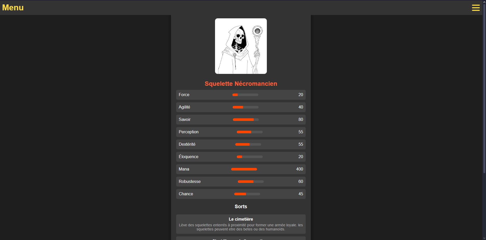
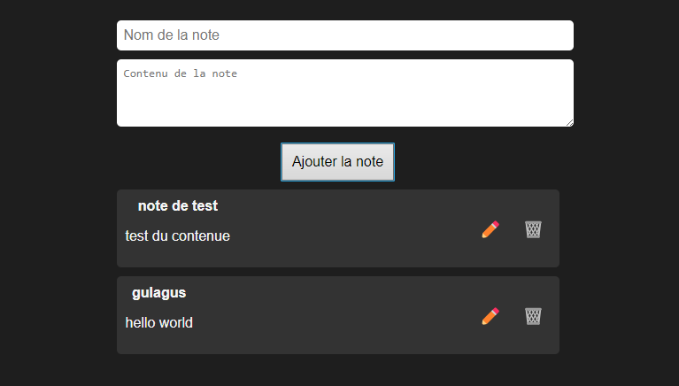

CUSTOM CARD
JDR
A VENIR
Sur la page d'accueil de ce site, tout commence par le rituel sacré de l’ouverture de boosters. Une simple action, et voilà qu’un paquet de cartes apparaît, prêt à révéler ses mystères. Chaque ouverture est unique, chaque carte est un fragment du destin entre les mains du joueur. Et ainsi, la collection s’agrandit, carte après carte, la magie opère.
Mais les cartes obtenues ne sont pas simplement de passage, oh non ! Elles sont conservées avec soin dans une collection personnelle, un véritable grimoire numérique. Même si l’on quitte le site, chaque carte, chaque rareté, chaque trésor reste gravé dans les arcanes du code. Le joueur peut y revenir à tout moment, consulter ses trouvailles, et les admirer dans toute leur splendeur.
"La collection est pensée pour éviter l’encombrement. J’ai veillé à ce que les cartes ne s’entassent pas comme des parchemins oubliés au fond d’une bibliothèque. Grâce à une navigation fluide, on peut passer d’une page à l’autre, explorant chaque section de la collection sans confusion. Tout est organisé pour que l’utilisateur retrouve aisément les joyaux de sa quête.
Toutefois, parfois vient le moment de faire place nette, de renouveler le grimoire. J’ai ainsi ajouté une option pour supprimer toutes les cartes de la collection d’un simple clic. Comme un rite de purification, cette fonction permet au joueur de repartir de zéro, de renouveler sa quête, libre de toute attache.
En HTML, CSS et JavaScript, j'ai enchaîné les lignes de code et invoqué les scripts pour donner vie à ce site. Une interface qui garde chaque carte en mémoire, prête à rouvrir ses trésors à chaque connexion. C’est un portail vers un monde de collection et de hasard, un lieu où le plaisir de la découverte est sans fin.
Chaque héros possède sa propre fiche de statistiques, conservée avec soin dans ce grimoire virtuel. À tout moment, il suffit d'un clic pour consulter les capacités et les secrets de chacun, une fenêtre vers les forces et faiblesses de nos compagnons d'armes. Ainsi, les bâtisseurs de destins peuvent se rappeler les chiffres qui forgent leurs légendes.
Ce sanctuaire est doté d’un simulateur de dés puissant et polyvalent. D'un mouvement du doigt, je peux invoquer des D6, D20, et même des D100, pour trancher le sort d'une action, déterminer le succès d'un coup, ou plonger dans le hasard des événements. Chaque jet est enregistré, avec la date et l'heure, gravé dans l'histoire pour éviter toute supercherie et rappeler aux dieux que nos sorts ont bien été lancés. Dans le coin de la page, une option surgit discrètement pour effacer cet historique, uniquement accessible ici, une clé pour renouveler le destin sans traces des lancers passés.

Mais ce n'est pas tout ! Pour plonger davantage dans l'univers qui nous entoure, j'ai compilé un recueil de savoir, une base de données fournie avec tout le lore de nos aventures. Grâce à une barre de recherche habilement dissimulée, mes compagnons peuvent explorer cet univers à leur guise, découvrant histoires et mystères, stockés avec soin dans un dossier JSON, une archive intemporelle.
J'ai également forgé une carte, un monde en miniature, où l'on peut zoomer et placer des pions. Que ce soit pour représenter un campement, une embuscade, ou un point d'intérêt, chaque pion restera fidèle à sa place, même si l’on quitte la page. Comme une carte enchantée, elle conserve tous nos mouvements et emplacements, une véritable aide pour nos stratégies et nos marches forcées.
Chaque aventurier a accès à une page pour prendre des notes. Un parchemin personnel que l’on peut modifier, supprimer, ou compléter à sa guise, et les mots y resteront gravés, même si l'on quitte l'endroit. Ces notes, ces mémoires des hauts faits et des mystères à élucider, sont préservées comme dans les bibliothèques des grands sages.
Enfin, un système d'inventaire a été mis en place, permettant à chacun de gérer ses possessions et ses pièces d'or avec précision. Ici, chaque objet, chaque pièce d'or est consigné avec soin. L'or, les armes, les artefacts ; tout est là, stocké pour que nul ne perde ses biens, et tout cela reste, même si l'on s'éloigne un temps de la page.
Tout cela, je l'ai bâti en HTML, CSS, et JavaScript, un code tissé dans la trame même de l'Internet, pour que chaque compagnon puisse s'y aventurer à tout moment. Ce site est notre campement, notre forteresse digitale, un espace pour que nos aventures perdurent, et que nos légendes ne s'effacent jamais.